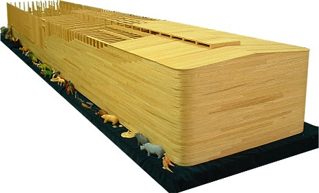
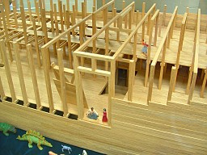
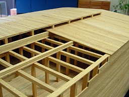
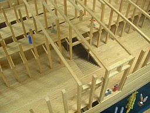
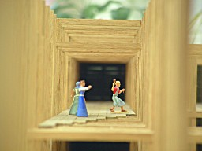
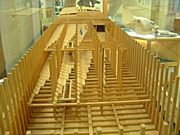
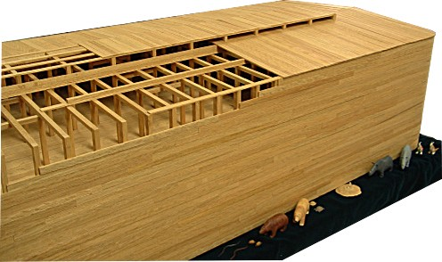

COPYRIGHT Tim Lovett © Aug 2004
.
.
.
Joe O'Connell.
"O" scale model 1:48. (2858 x 476 x 286mm), (112.5 x 18.75 x 11.25 inches) Planked without nails in Red Oak, 32lbs, 398 hours, 2146 separate pieces.






